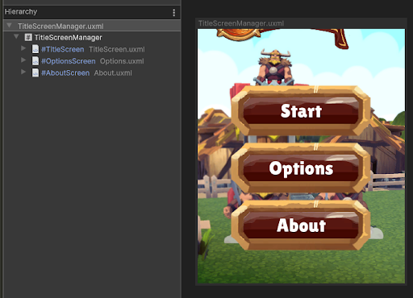

Encapsulate UXML documents with logic
A Prefab is a pre-made GameObject that you can instantiate multiple times in a scene. Prefabs are useful for creating reusable components. Visual elements in UI Toolkit aren’t GameObjects and therefore Prefabs don’t apply. However, you can create a custom control as a reusable UI component that encapsulates a specific hierarchy of elements with logic. Because UI Toolkit encourages you to separate the UI from your game or application code, you can use UXML to define the structure, use USS to define the look, and use C# to define the logic of your custom control.
Create reusable UI components
To create a reusable UI component, such as a custom control called CardElement for a card, which displays an image for the character, and the life and attack statistics as shown below:

These are the general steps to accomplish this:
In C#, declare a custom element type called CardElement.
-
In UXML, define the hierarchy of the custom control. You can use two approaches. Both approaches support instantiating the
CardElementin C# and in a parent UXML.- UXML-first approach adds children after element construction.
- Element-first approach adds children during element construction.
Locate references to child elements of the custom control.
Expose properties and methods, and encapsulate logic in your custom control the same way as you do with any C# classes.
Connect your custom control with your game or application code. You can also register event callbacks to implement user interaction.
UXML-first approach
With this approach, you include your custom element CardElement in the hierarchy UXML document and declare its child elements directly underneath, and use the hierarchy UXML document as a template. This approach offers a simpler solution with a fixed UI structure within the hierarchy UXML document.
The following C# and UXML examples demonstrate how to use the UXML-first approach to create reusable UI.
Create the custom control class
Create a C# script that defines CardElement custom control. The custom control class assigns an image and badge values to CardElement.
using UnityEngine;
using UnityEngine.UIElements;
// Define the custom control type.
public class CardElement : VisualElement
{
// Expose the custom control to UXML and UI Builder.
public new class UxmlFactory : UxmlFactory<CardElement> {}
private VisualElement portraitImage => this.Q("image");
private Label attackBadge => this.Q<Label>("attack-badge");
private Label healthBadge => this.Q<Label>("health-badge");
// Use the Init() approach instead of a constructor because
// we don't have children yet.
public void Init(Texture2D image, int health, int attack)
{
portraitImage.style.backgroundImage = image;
attackBadge.text = health;
healthBadge.text = attack;
}
// Custom controls need a default constructor.
public CardElement() {}
}
Define the hierarchy of the custom control
Create a UXML document (CardElement.uxml) that defines the hierarchy of CardElement. This example styles CardElement with a USS file.
<ui:UXML xmlns:ui="UnityEngine.UIElements" xmlns:uie="UnityEditor.UIElements" editor-extension-mode="False">
<Style src="CardElementUI.uss" />
<CardElement>
<ui:VisualElement name="image" />
<ui:VisualElement name="stats">
<ui:Label name="attack-badge" class="badge" />
<ui:Label name="health-badge" class="badge" />
</ui:VisualElement>
</CardElement>
</ui:UXML>
Connect custom controls to your game
You can connect your custom control to your game by the following:
- Instantiate
CardElement.uxmlinside a parent UXML document. You can navigate back and forth between the hierarchy UXML and this UXML document in UI Builder. - Instantiate
CardElement.uxmlcontainingCardElementfrom a MonoBehaviour C# script. You must use UQuery to find CardElement before you add it to the scene.
You call Init() after adding the custom control into the scene.
You can also add gameplay-related actions, such as a click event to interact with the elements.
Instantiate inside parent UXML
The following shows an example of instantiation in UXML:
<ui:UXML xmlns:ui="UnityEngine.UIElements" xmlns:uie="UnityEditor.UIElements" editor-extension-mode="False">
<ui:Template name="CardElement" src="CardElement.uxml"/>
<ui:Instance template="CardElement"/>
<ui:Instance template="CardElement"/>
<ui:Instance template="CardElement"/>
</ui:UXML>
For information on how to render the UXML document in your game, see Render UI in the Game view.
Instantiate directly in C#
Note: For learning purposes, the example code on this page uses the Resources folder method to load the UXML files which is convenient. However, this method doesn’t scale well. It’s recommended that you use other methods to load references for your production projects.
The following shows an example of instantiation in C#:
using UnityEngine;
using UnityEngine.UIElements;
public class UIManager : MonoBehaviour
{
public void Start()
{
UIDocument document = GetComponent<UIDocument>();
// Load the UXML document that defines the hierarchy of CardElement.
// It assumes the UXML file is placed at the "Resources" folder.
VisualTreeAsset template = Resources.Load<VisualTreeAsset>("CardElement");
// Create a loop to modify properties and perform interactions
// for each card. It assumes that you have created a function
// called `GetCards()` to get all the cards in your game.
foreach(Card card in GetCards())
{
// Instantiate a template container.
var templateContainer = template.Instantiate();
// Find the custom element inside the template container.
var cardElement = templateContainer.Q<CardElement>();
// Add the custom element into the scene.
document.rootVisualElement.Add(cardElement);
// Initialize the card.
cardElement.Init(card.image, card.health, card.attack);
// Register an event callback for additional interaction.
cardElement.RegisterCallback<ClickEvent>(SomeInteraction);
}
}
private void SomeInteraction(ClickEvent evt)
{
// Interact with the elements here.
}
}
Element-first approach
With this approach, you only include the child elements in the hierarchy UXML document and use C# to load the hierarchy UXML document into the CardElement class definition. This approach offers a flexible UI structure for custom controls. For example, you can load different hierarchy UXML documents depending on specific conditions.
The following C# and UXML examples demonstrate how to use the element-first approach to create reusable UI.
Create the custom control class
Create a C# script that defines the CardElement custom control. In addition to defining a constructor to assign an image and badge values to CardElement, the custom control loads the hierarchy UXML document in its class definition.
using UnityEngine;
using UnityEngine.UIElements;
// Define the custom control type.
public class CardElement : VisualElement
{
// Expose the custom control to UXML and UI Builder.
public new class UxmlFactory : UxmlFactory<CardElementA> {}
private VisualElement portraitImage => this.Q("image");
private Label attackBadge => this.Q<Label>("attack-badge");
private Label healthBadge => this.Q<Label>("health-badge");
// Custom controls need a default constructor. This default constructor
// calls the other constructor in this class.
public CardElement() {}
// Define a constructor that loads the UXML document that defines
// the hierarchy of CardElement and assigns an image and badge values.
public CardElement(Texture2D image, int health, int attack)
{
// It assumes the UXML file is called "CardElement.uxml" and
// is placed at the "Resources" folder.
var asset = Resources.Load<VisualTreeAsset>("CardElement");
asset.CloneTree(this);
portraitImage.style.backgroundImage = image;
attackBadge.text = health.ToString();
healthBadge.text = attack.ToString();
}
}
Note: If you have performance concerns, use lazy initialization to keep fields to cache the references and avoid re-evaluating the queries too often.
Define the hierarchy of the custom control
Create a UXML document (CardElement.uxml) that defines the hierarchy of the child elements of CardElement. The example styles CardElement with a USS file.
<ui:UXML xmlns:ui="UnityEngine.UIElements" xmlns:uie="UnityEditor.UIElements" editor-extension-mode="False">
<Style src="CardElementUI.uss" />
<ui:VisualElement name="image" />
<ui:VisualElement name="stats">
<ui:Label name="attack-badge" class="badge" />
<ui:Label name="health-badge" class="badge" />
</ui:VisualElement>
</ui:UXML>
Connect custom controls to your game
You can connect your custom control to your game by doing the following:
- Instantiate
CardElement.uxmlinside a parent UXML document. In UI Builder, you can’t navigate back and forth between the hierarchy UXML and this UXML document because child elements are loaded from C#. - Instantiate
CardElement.uxmlcontainingCardElementfrom a MonoBehaviour C# script.
You call the constructor before adding the custom control to the scene.
You can also add gameplay-related actions, such as a click event to interact with the elements.
Instantiate inside parent UXML
The following shows an example of instantiation in UXML:
<ui:UXML xmlns:ui="UnityEngine.UIElements" xmlns:uie="UnityEditor.UIElements" editor-extension-mode="False">
<CardElement />
<CardElement />
<CardElement />
</ui:UXML>
For information on how to render the UXML document in your game, see Render UI in the Game view.
Instantiate directly in C#
The following shows an example of instantiation in C#:
using UnityEngine;
using UnityEngine.UIElements;
public class UIManager : MonoBehaviour
{
public void Start()
{
UIDocument document = GetComponent<UIDocument>();
// Create a loop to modify properties and perform interactions
// for each card. It assumes that you have created a function
// called `GetCards()` to get all the cards in your game.
foreach(Card card in GetCards())
{
var cardElement = new CardElement(card.image, card.health, card.attack);
// Register an event callback for additional interaction.
cardElement.RegisterCallback<ClickEvent>(SomeInteraction);
// Add the custom element into the scene.
document.rootVisualElement.Add(cardElement);
}
}
private void SomeInteraction(ClickEvent evt)
{
// Interact with the elements here.
}
}
Build more complex elements
As the UI of your project gets more complex, it’s better to isolate your logic into higher-level components. This makes orchestrating the UI easier for the rest of the game or application.
You can apply the concepts on this page to gradually build specialized components out of smaller, more generic components. For example, to build a main title screen from which the user can access an Options menu and an About section, you can create a TitleScreenManager element with three different child UXML documents. Each defines its own elements: Title, Options, and About.
 For more information, see this YouTube video.